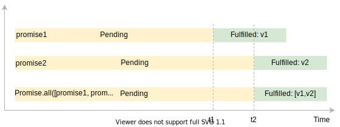
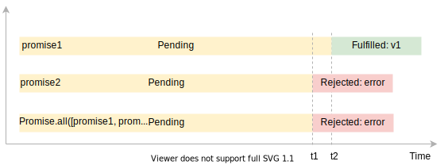

Neste diagrama, o promise1 resolve para um valor v1 em t1 e o promise2 resolve para um valor v2 em t2. Portanto, o Promise.all(promise1, promise2) retorna uma promessa que resolve para uma array contendo os resultados de promise1 e promise2 [v1, v2] em t2.
Se uma das promessas de entrada for rejeitada, o Promise.all() método retornará imediatamente uma promessa que rejeita com um erro da primeira promessa rejeitada:
